Project Archive
Projects built around problems, workflows, and real users.
Problem
Debugging often starts with messy logs, stack traces, unclear bug reports, and scattered notes. That makes it harder to quickly understand severity, likely causes, and next steps.
Solution
I built a full-stack bug triage dashboard that turns raw technical issue details into structured engineering reports with summaries, severity, root cause analysis, debugging steps, and tests to add.
Result
The project demonstrates a realistic internal developer-tool workflow with authentication, AI analysis, saved issue history, database persistence, and deployed frontend/backend services.
What I Built
- Built a polished React dashboard with issue metrics, saved reports, filters, and severity visualization.
- Created a Flask backend that securely calls the Gemini API and returns structured triage results.
- Implemented Supabase authentication, PostgreSQL storage, and row-level security for user-scoped issue data.
- Added issue history, status updates, saved detail pages, and Markdown export for sharing reports.
- Deployed the frontend on Vercel and the backend API on Render with environment-based configuration.
Screenshots
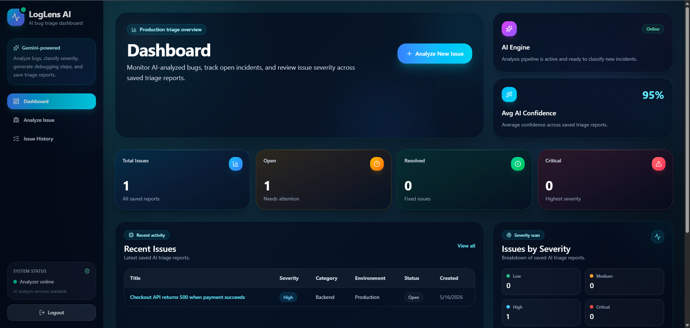
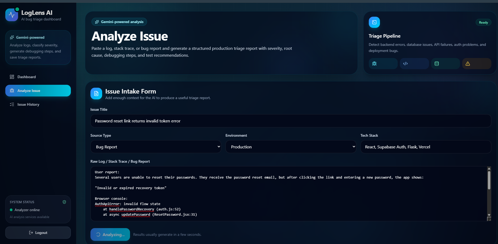
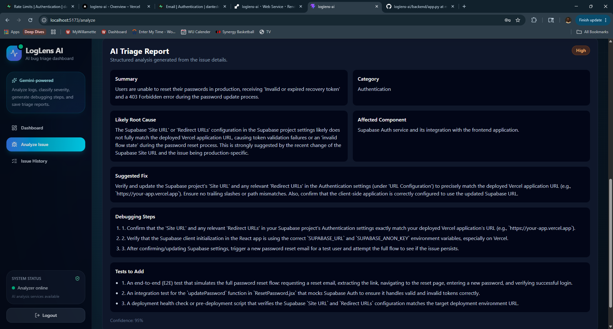
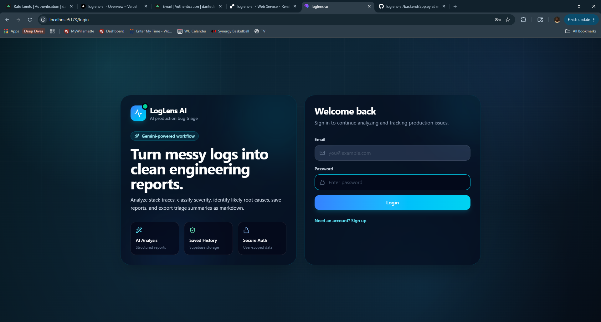
Problem
Checking weather before a trip usually means jumping between forecast pages and manually deciding what to pack or which days are better for outdoor plans.
Solution
I built a weather planning app that combines forecast data with packing suggestions, trip summaries, hourly breakdowns, and activity recommendations.
Result
The app turns raw weather API data into a more useful travel planning workflow through a deployed React frontend and Flask backend.
What I Built
- Integrated the OpenWeather API to deliver live 5-day forecast data with daily and hourly breakdowns.
- Built expandable forecast cards, recent search persistence, and a trip summary system with best indoor/outdoor day suggestions.
- Designed packing suggestions and city-aware activity recommendations driven by weather conditions.
- Created a temperature trend visualization to help users quickly understand trip weather patterns.
- Implemented a full-stack deployment workflow with a React frontend on Vercel and a Flask backend on Render.
Screenshots
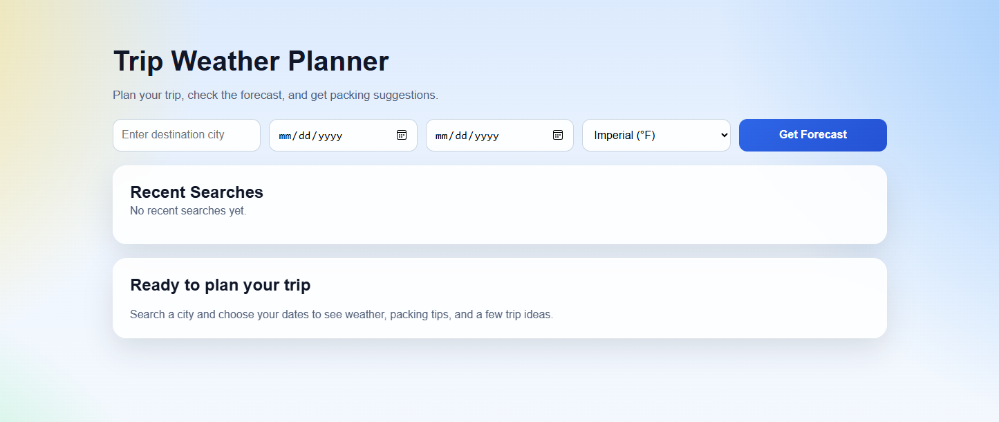
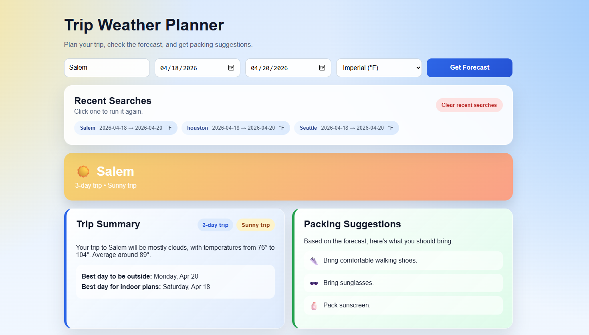
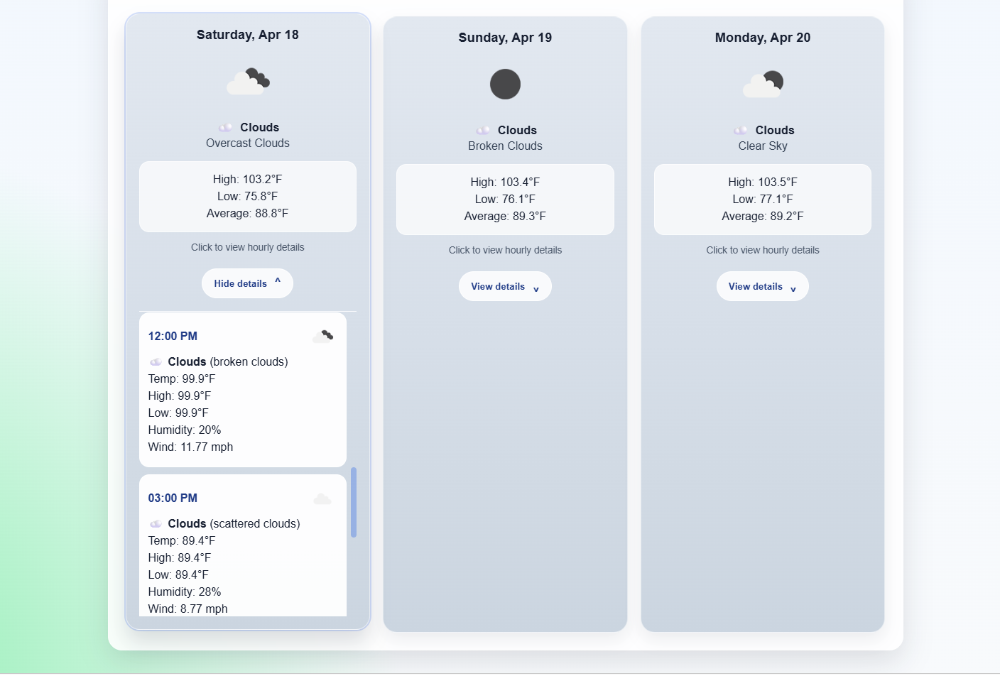
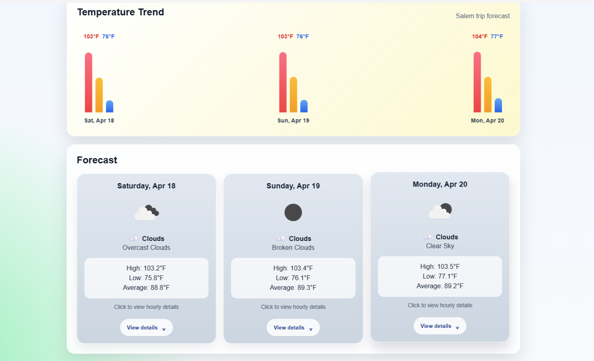
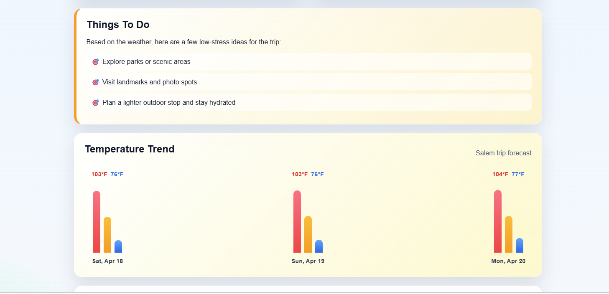
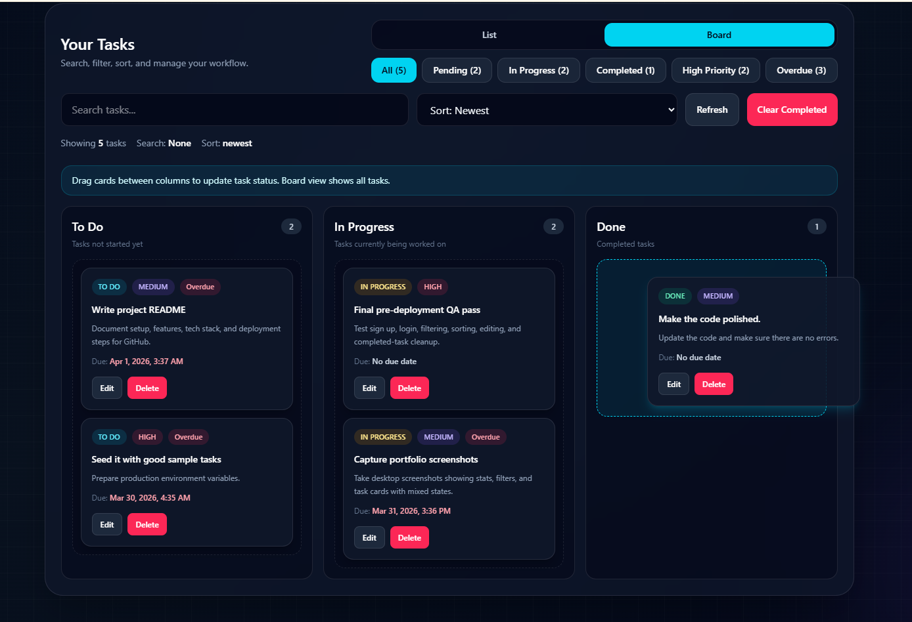
Problem
Task tracking can get messy when statuses, deadlines, files, reminders, and activity history are split across different tools or handled manually.
Solution
I built a full-stack productivity dashboard that centralizes task management, file attachments, reminders, analytics, activity logging, and Kanban workflows in one authenticated application.
Result
The app now feels closer to a real SaaS product, with secure user-specific data, cleaner navigation, file handling, dashboard insights, and deployed production infrastructure.
What I Built
- Implemented secure sign up, login, session handling, and user-specific task access with Supabase Auth and PostgreSQL.
- Built task CRUD with due dates, due times, priorities, statuses, search, filtering, sorting, and completion controls.
- Added drag-and-drop Kanban board workflows for moving tasks between To Do, In Progress, and Done.
- Integrated Supabase Storage for file attachments, signed file access, upload support during task creation, and attachment deletion.
- Created analytics charts, in-app reminders, overdue/due-soon tracking, and activity feed audit logs.
- Built scheduled email reminder infrastructure using Supabase Edge Functions and Resend, with reminder tracking and duplicate-send protection.
- Refactored the interface into a cleaner tab-based layout with Tasks, Create, Insights, and Activity sections.
- Improved dark/light mode contrast and responsive layout behavior for a more polished product experience.
Why It Matters
This project shows more than basic CRUD. It combines authentication, database-backed workflows, storage, dashboard analytics, UI state management, protected user data, serverless backend logic, deployment, and real product polish.
Screenshots
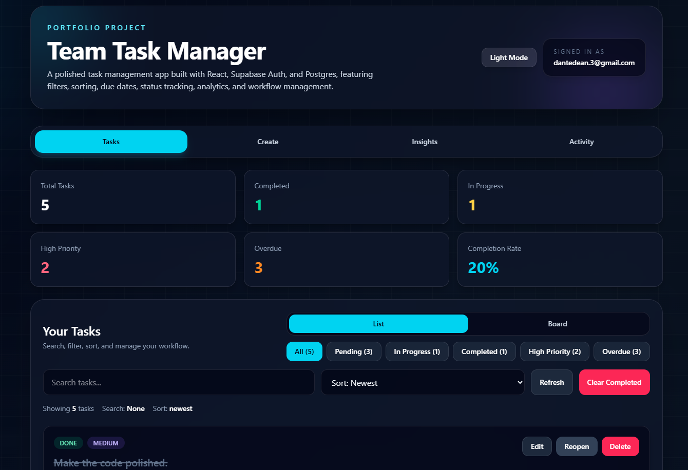
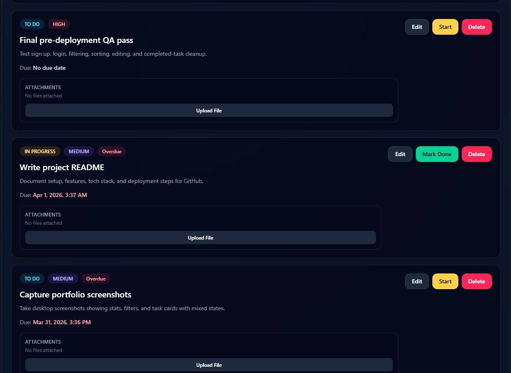
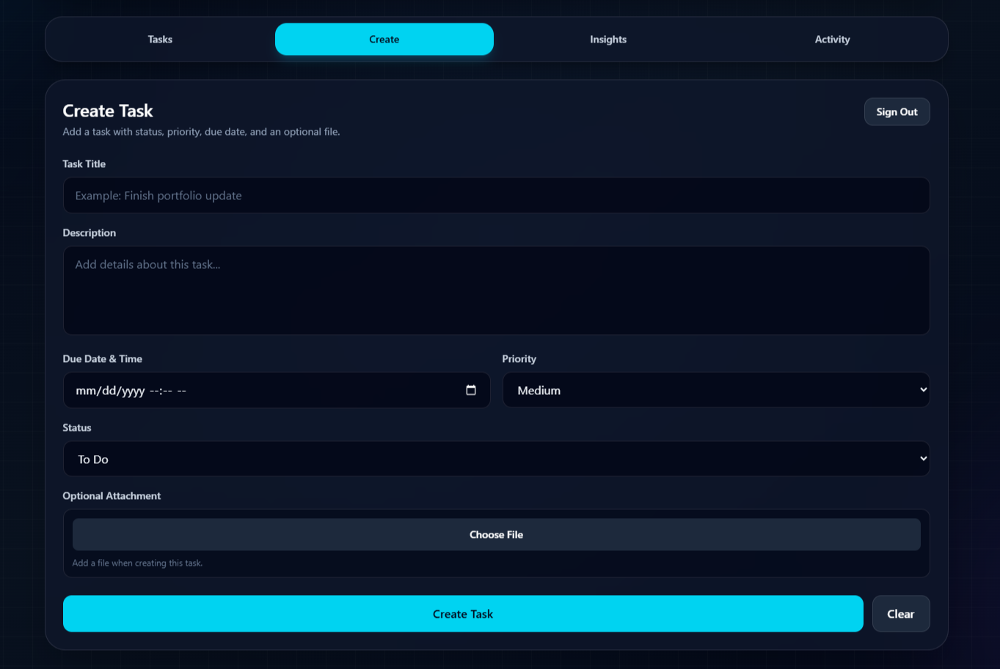
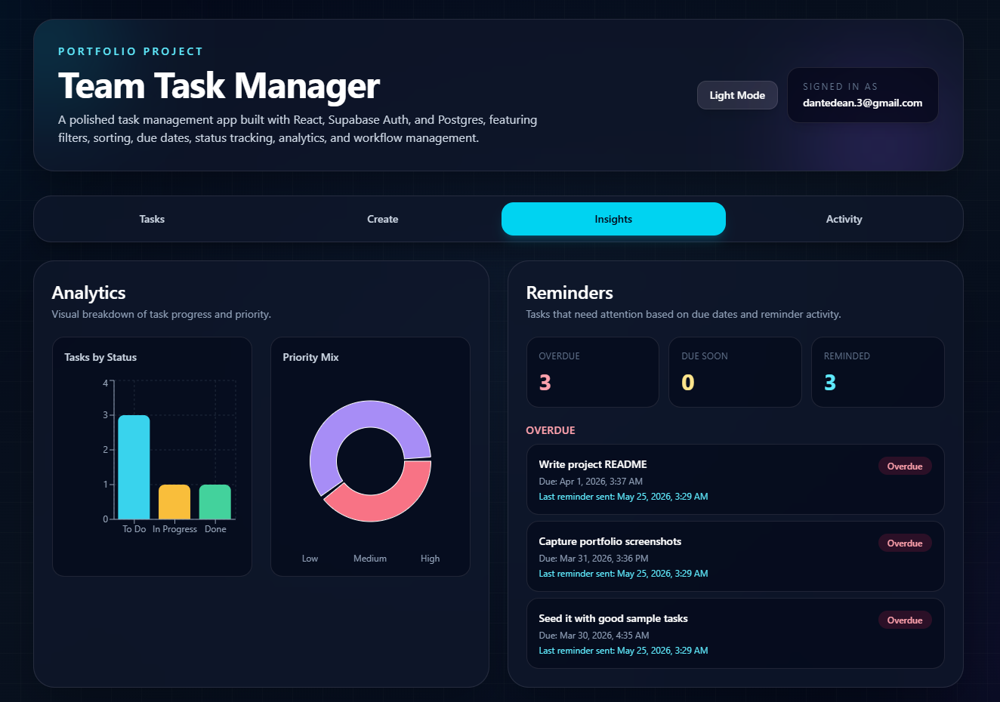
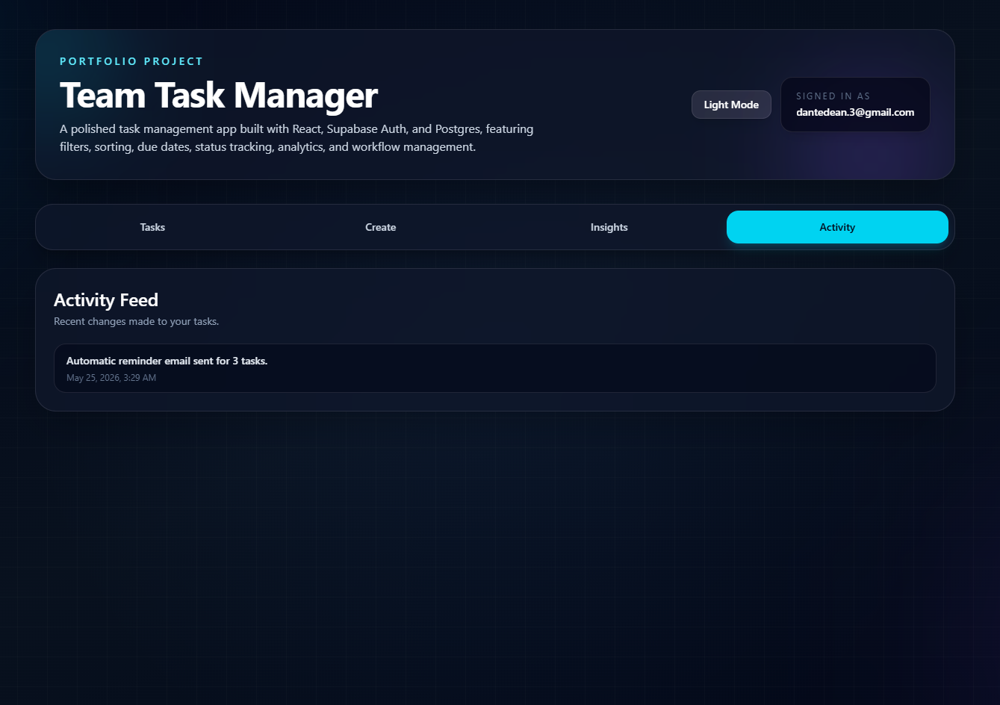
Production Platform Work
Docu Island
Problem
Businesses need a central place to manage records, organize files, and support document workflows across departments.
Work
I contributed frontend, backend, and bug-fix work across dashboard and records-related flows for a live document and records management platform.
Result
The work supported production improvements, platform polish, and more reliable user-facing behavior.
What I Worked On
- Frontend UI work across records and dashboard views.
- Backend updates to support platform workflows and fixes.
- Bug fixing and polish across multiple modules during active use.
Screenshots


Internal Admin Systems
Checklist Admin + Group Management
Problem
Staff needed a clearer way to manage student group membership, criteria-based definitions, and operational checklist controls without manually digging through data.
Solution
I built and updated internal PHP admin tooling for group lookup, group membership rendering, validation workflows, and new-term operational controls.
Impact
The tools improved how staff searched, viewed, validated, and maintained operational student data.
What I Built
- Built dynamic group membership rendering used by administrators.
- Improved validation logic to prevent invalid criteria submissions.
- Refactored legacy PHP paths for cleaner execution and maintainability.
- Implemented reset and visibility controls for term transitions.
Screenshots


Operational Automation
Automation + Cron Reporting
Problem
Reporting jobs needed to stay current without manual refreshes or fragile one-off execution.
Solution
I worked on scheduled reporting scripts that clear, repopulate, and refresh data from CSV and database sources.
Impact
The automation improved reporting freshness, production safety, and long-term maintainability.
What I Built
- Migrated reporting jobs from daily to hourly execution.
- Added environment guards for production-safe automation.
- Improved readability and long-term maintainability.
Systems Programming
Simple SCM
Problem
Source control systems can feel abstract until you build the mechanics yourself.
Solution
I built a simplified source control manager to understand repository initialization, snapshot storage, commit tracking, and file reversion.
Result
The project strengthened my understanding of CLI design, file systems, and how version-control tools manage state.
What I Built
- Repository initialization and commit tracking.
- File snapshot storage.
- Revert functionality with CLI interface.
Client Website
Libra Ink Tattoos
Problem
The client needed a cleaner web presence that could show artist work and make booking easier for visitors.
Solution
I designed and launched a live website with a booking-focused structure, portfolio/gallery content, and a simple path for clients to view work and take action.
Result
The project delivered a production website for a real business and gave the client a stronger online presence.
Want to talk?
Looking for someone who can build, debug, and ship practical software?
I’m open to software engineering, full-stack development, backend, internal tools, automation, and data-driven application roles.